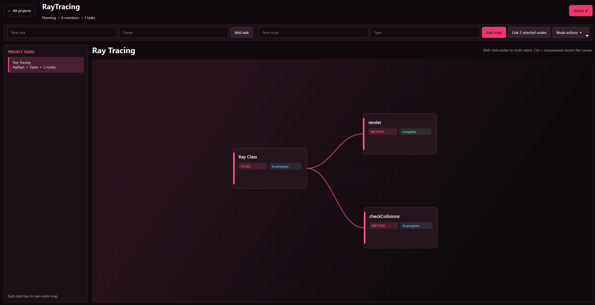

PROJECT FILE / Work in progress
SimuO Project Manager
Project management shaped around the way a small university club works.
Client-server architecture · Tickets · Node diagrams
The problem
As a young club, SimuOttawa has a limited budget. We are building a project manager around Cloudflare and Google services, choosing the features our team actually needs rather than paying for a larger platform.
My contribution
I am building the ticket manager: a workflow inspired by pull requests, adapted to smaller problems and tasks. I spend approximately one to two hours a week on it.
The wider system
The team’s client-server application uses connected node views to show steps and relationships. Its broader scope includes visualizing UML, JSON, and software architecture. The screenshot shows a task map connecting a Ray Class to render and checkCollisions methods.
Current status
The project is still in development and has no public demo. The screenshot is a work-in-progress view of the team’s application.

LET’S BUILD SOMETHING
Available for co-op · January 1, 2027
Seeking opportunities in software engineering, hardware / FPGA, and machine learning.